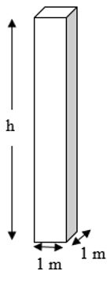

Chapter 2 Properties of water (and air)
Fundamental properties of water allow the description of the forces it exerts and how it behaves while in motion. Many were listed in Chapter .
A summary of basic water properties, which vary with temperature, is shown in Table 2.1 for SI units and Table 2.2 for US (or Eng) units.
| C | kg m-3 | N m-3 | N s m-2 | m2 s-1 | Pa | N m-1 | Pa |
|---|---|---|---|---|---|---|---|
| \(0\) | \(999.9\) | \({9.809}\times 10^{3}\) | \({1.734}\times 10^{-3}\) | \({1.734}\times 10^{-6}\) | \(611.2\) | \({75.7}\times 10^{-3}\) | \({2.02}\times 10^{9}\) |
| \(5\) | \(1000\) | \({9.810}\times 10^{3}\) | \({1.501}\times 10^{-3}\) | \({1.501}\times 10^{-6}\) | \(872.6\) | \({74.9}\times 10^{-3}\) | \({2.06}\times 10^{9}\) |
| \(10\) | \(999.7\) | \({9.807}\times 10^{3}\) | \({1.310}\times 10^{-3}\) | \({1.311}\times 10^{-6}\) | \({1.228}\times 10^{3}\) | \({74.2}\times 10^{-3}\) | \({2.10}\times 10^{9}\) |
| \(15\) | \(999.1\) | \({9.801}\times 10^{3}\) | \({1.153}\times 10^{-3}\) | \({1.154}\times 10^{-6}\) | \({1.706}\times 10^{3}\) | \({73.5}\times 10^{-3}\) | \({2.14}\times 10^{9}\) |
| \(20\) | \(998.2\) | \({9.793}\times 10^{3}\) | \({1.021}\times 10^{-3}\) | \({1.023}\times 10^{-6}\) | \({2.339}\times 10^{3}\) | \({72.7}\times 10^{-3}\) | \({2.18}\times 10^{9}\) |
| \(25\) | \(997.1\) | \({9.781}\times 10^{3}\) | \({910.8}\times 10^{-6}\) | \({913.5}\times 10^{-9}\) | \({3.170}\times 10^{3}\) | \({72.0}\times 10^{-3}\) | \({2.22}\times 10^{9}\) |
| \(30\) | \(995.7\) | \({9.768}\times 10^{3}\) | \({817.4}\times 10^{-6}\) | \({821.0}\times 10^{-9}\) | \({4.247}\times 10^{3}\) | \({71.2}\times 10^{-3}\) | \({2.25}\times 10^{9}\) |
| \(35\) | \(994.1\) | \({9.752}\times 10^{3}\) | \({738.0}\times 10^{-6}\) | \({742.4}\times 10^{-9}\) | \({5.629}\times 10^{3}\) | \({70.4}\times 10^{-3}\) | \({2.26}\times 10^{9}\) |
| \(40\) | \(992.2\) | \({9.734}\times 10^{3}\) | \({669.9}\times 10^{-6}\) | \({675.1}\times 10^{-9}\) | \({7.385}\times 10^{3}\) | \({69.6}\times 10^{-3}\) | \({2.28}\times 10^{9}\) |
| \(45\) | \(990.2\) | \({9.714}\times 10^{3}\) | \({611.2}\times 10^{-6}\) | \({617.3}\times 10^{-9}\) | \({9.595}\times 10^{3}\) | \({68.8}\times 10^{-3}\) | \({2.28}\times 10^{9}\) |
| \(50\) | \(988.1\) | \({9.693}\times 10^{3}\) | \({560.5}\times 10^{-6}\) | \({567.2}\times 10^{-9}\) | \({12.35}\times 10^{3}\) | \({67.9}\times 10^{-3}\) | \({2.29}\times 10^{9}\) |
| \(55\) | \(985.7\) | \({9.670}\times 10^{3}\) | \({516.2}\times 10^{-6}\) | \({523.7}\times 10^{-9}\) | \({15.76}\times 10^{3}\) | \({67.1}\times 10^{-3}\) | \({2.28}\times 10^{9}\) |
| \(60\) | \(983.2\) | \({9.645}\times 10^{3}\) | \({477.6}\times 10^{-6}\) | \({485.7}\times 10^{-9}\) | \({19.95}\times 10^{3}\) | \({66.2}\times 10^{-3}\) | \({2.28}\times 10^{9}\) |
| \(65\) | \(980.6\) | \({9.619}\times 10^{3}\) | \({443.5}\times 10^{-6}\) | \({452.3}\times 10^{-9}\) | \({25.04}\times 10^{3}\) | \({65.4}\times 10^{-3}\) | \({2.26}\times 10^{9}\) |
| \(70\) | \(977.7\) | \({9.592}\times 10^{3}\) | \({413.5}\times 10^{-6}\) | \({422.9}\times 10^{-9}\) | \({31.20}\times 10^{3}\) | \({64.5}\times 10^{-3}\) | \({2.25}\times 10^{9}\) |
| \(75\) | \(974.8\) | \({9.563}\times 10^{3}\) | \({386.9}\times 10^{-6}\) | \({396.9}\times 10^{-9}\) | \({38.60}\times 10^{3}\) | \({63.6}\times 10^{-3}\) | \({2.22}\times 10^{9}\) |
| \(80\) | \(971.7\) | \({9.533}\times 10^{3}\) | \({363.1}\times 10^{-6}\) | \({373.7}\times 10^{-9}\) | \({47.42}\times 10^{3}\) | \({62.7}\times 10^{-3}\) | \({2.20}\times 10^{9}\) |
| \(85\) | \(968.5\) | \({9.501}\times 10^{3}\) | \({341.9}\times 10^{-6}\) | \({353.0}\times 10^{-9}\) | \({57.87}\times 10^{3}\) | \({61.8}\times 10^{-3}\) | \({2.17}\times 10^{9}\) |
| \(90\) | \(965.2\) | \({9.468}\times 10^{3}\) | \({322.9}\times 10^{-6}\) | \({334.5}\times 10^{-9}\) | \({70.18}\times 10^{3}\) | \({60.8}\times 10^{-3}\) | \({2.14}\times 10^{9}\) |
| \(95\) | \(961.7\) | \({9.434}\times 10^{3}\) | \({305.7}\times 10^{-6}\) | \({317.9}\times 10^{-9}\) | \({84.61}\times 10^{3}\) | \({59.9}\times 10^{-3}\) | \({2.10}\times 10^{9}\) |
| \(100\) | \(958.1\) | \({9.399}\times 10^{3}\) | \({290.2}\times 10^{-6}\) | \({302.9}\times 10^{-9}\) | \({101.4}\times 10^{3}\) | \({58.9}\times 10^{-3}\) | \({2.07}\times 10^{9}\) |
| F | slug ft-3 | lbf ft-3 | lbf s ft-2 | ft2 s-1 | lbf ft-2 | lbf ft-1 | lbf ft-2 |
|---|---|---|---|---|---|---|---|
| \(32\) | \(1.938\) | \(62.42\) | \({36.21}\times 10^{-6}\) | \({18.73}\times 10^{-6}\) | \(12.77\) | \({5.18}\times 10^{-3}\) | \({42.2}\times 10^{6}\) |
| \(42\) | \(1.939\) | \(62.43\) | \({30.87}\times 10^{-6}\) | \({15.96}\times 10^{-6}\) | \(18.94\) | \({5.13}\times 10^{-3}\) | \({43.1}\times 10^{6}\) |
| \(52\) | \(1.938\) | \(62.40\) | \({26.58}\times 10^{-6}\) | \({13.75}\times 10^{-6}\) | \(27.62\) | \({5.07}\times 10^{-3}\) | \({44.0}\times 10^{6}\) |
| \(62\) | \(1.937\) | \(62.36\) | \({23.11}\times 10^{-6}\) | \({11.96}\times 10^{-6}\) | \(39.64\) | \({5.02}\times 10^{-3}\) | \({45.0}\times 10^{6}\) |
| \(72\) | \(1.934\) | \(62.29\) | \({20.26}\times 10^{-6}\) | \({10.50}\times 10^{-6}\) | \(56.00\) | \({4.96}\times 10^{-3}\) | \({45.9}\times 10^{6}\) |
| \(82\) | \(1.932\) | \(62.20\) | \({17.90}\times 10^{-6}\) | \({9.290}\times 10^{-6}\) | \(77.99\) | \({4.90}\times 10^{-3}\) | \({46.7}\times 10^{6}\) |
| \(92\) | \(1.928\) | \(62.09\) | \({15.94}\times 10^{-6}\) | \({8.286}\times 10^{-6}\) | \(107.2\) | \({4.84}\times 10^{-3}\) | \({47.2}\times 10^{6}\) |
| \(102\) | \(1.925\) | \(61.97\) | \({14.29}\times 10^{-6}\) | \({7.443}\times 10^{-6}\) | \(145.3\) | \({4.78}\times 10^{-3}\) | \({47.5}\times 10^{6}\) |
| \(112\) | \(1.920\) | \(61.83\) | \({12.89}\times 10^{-6}\) | \({6.732}\times 10^{-6}\) | \(194.7\) | \({4.72}\times 10^{-3}\) | \({47.7}\times 10^{6}\) |
| \(122\) | \(1.916\) | \(61.68\) | \({11.71}\times 10^{-6}\) | \({6.126}\times 10^{-6}\) | \(258.0\) | \({4.66}\times 10^{-3}\) | \({47.8}\times 10^{6}\) |
| \(132\) | \(1.911\) | \(61.52\) | \({10.69}\times 10^{-6}\) | \({5.608}\times 10^{-6}\) | \(338.1\) | \({4.59}\times 10^{-3}\) | \({47.7}\times 10^{6}\) |
| \(142\) | \(1.905\) | \(61.34\) | \({9.808}\times 10^{-6}\) | \({5.162}\times 10^{-6}\) | \(438.5\) | \({4.53}\times 10^{-3}\) | \({47.5}\times 10^{6}\) |
| \(152\) | \(1.899\) | \(61.16\) | \({9.046}\times 10^{-6}\) | \({4.775}\times 10^{-6}\) | \(563.2\) | \({4.46}\times 10^{-3}\) | \({47.2}\times 10^{6}\) |
| \(162\) | \(1.893\) | \(60.96\) | \({8.381}\times 10^{-6}\) | \({4.438}\times 10^{-6}\) | \(716.9\) | \({4.39}\times 10^{-3}\) | \({46.8}\times 10^{6}\) |
| \(172\) | \(1.887\) | \(60.75\) | \({7.797}\times 10^{-6}\) | \({4.144}\times 10^{-6}\) | \(904.5\) | \({4.32}\times 10^{-3}\) | \({46.2}\times 10^{6}\) |
| \(182\) | \(1.880\) | \(60.53\) | \({7.283}\times 10^{-6}\) | \({3.884}\times 10^{-6}\) | \({1.132}\times 10^{3}\) | \({4.25}\times 10^{-3}\) | \({45.5}\times 10^{6}\) |
| \(192\) | \(1.873\) | \(60.30\) | \({6.828}\times 10^{-6}\) | \({3.655}\times 10^{-6}\) | \({1.405}\times 10^{3}\) | \({4.18}\times 10^{-3}\) | \({44.8}\times 10^{6}\) |
| \(202\) | \(1.865\) | \(60.06\) | \({6.423}\times 10^{-6}\) | \({3.452}\times 10^{-6}\) | \({1.731}\times 10^{3}\) | \({4.11}\times 10^{-3}\) | \({44.0}\times 10^{6}\) |
| \(212\) | \(1.858\) | \(59.81\) | \({6.061}\times 10^{-6}\) | \({3.271}\times 10^{-6}\) | \({2.118}\times 10^{3}\) | \({4.04}\times 10^{-3}\) | \({43.2}\times 10^{6}\) |
What follows is a brief discussion of some of these properties, and how they can be applied in R. All of the properties shown in the tables above are produced using the hydraulics R package. The documentation for that package provides details on its use. The water property functions in the hydraulics package can be called using the ret_units input to allow it to return an object of class units, as designated by the package units. This enables capabilities for new units to be deduced as operations are performed on the values. Concise examples are in the vignettes for the ‘units’ package.
2.1 Properties important for water standing still
An intrinsic property of water is its mass. In the presence of gravity, it exerts a weight on its surroundings. Forces caused by the weight of water enter design in many ways. Example 2.1 uses water mass and weight in a calculation.
Example 2.1 Determine the tension in the 8 mm diameter rope holding a bucket containing 12 liters of water. Ignore the weight of the bucket. Assume a water temperature of 20 \(^\circ\)C.
rho = hydraulics::dens(T = 20, units = 'SI', ret_units = TRUE)
#Water density:
rho
#> 998.2336 [kg/m^3]
#Find mass by multiplying by volume
vol <- units::set_units(12, liter)
m <- rho * vol
#Convert mass to weight in Newtons
g <- units::set_units(9.81, m/s^2)
w <- units::set_units(m*g, "N")
#Divide by cross-sectional area of the rope to obtain tension
area <- units::set_units(pi/4 * 8^2, mm^2)
tension <- w/area
#Express the result in Pascals
units::set_units(tension, Pa)
#> 2337828 [Pa]
#For demonstration, convert to psi
units::set_units(tension, psi)
#> 339.0733 [psi]For example 2.1 units could have been tracked manually throughout, as if done by hand. The convenience of using the units package allows conversions that can be used to check hand calculations.
Water expands as it is heated, which is part of what is driving sea-level rise globally. Approximately 90% of excess energy caused by global warming pollution is absorbed by oceans, with most of that occurring in the upper ocean: 0-700 m of depth (Fox-Kemper et al. 2021). Example 2.2 uses water mass and weight in a calculation.
Example 2.2 Assume the ocean is made of fresh water (the change in density of sea water with temperature is close enough to fresh water for this illustration). Assume a 700 m thick upper layer of the ocean. Assuming this upper layer has an initial temperature of 15 \(^\circ\)C and calculate the change in mean sea level due to a 2 \(^\circ\)C rise in temperature of this upper layer.
 It may help to consider a single 1m x 1m column of water with h=700 m high under original conditions. Since mass is conserved, and mass = volume x density, this is simple: \[LWh_1\cdot\rho_1=LWh_2\cdot\rho_2\] or \[h_2=h_1\frac{\rho_1}{\rho_2}\]
rho1 = hydraulics::dens(T = 15, units = 'SI')
rho2 = hydraulics::dens(T = 17, units = 'SI')
h2 = 700 * (rho1/rho2)
cat(sprintf("Change in sea level = %.3f m\n", h2-700))
#> Change in sea level = 0.227 mThe bulk modulus, Ev, relates the change in specific volume to the change in pressure, and defined as in Equation (2.1). \[\begin{equation} E_v=-v\frac{dp}{dv} \tag{2.1} \end{equation}\] which can be discretized: \[\begin{equation} \frac{v_2-v_1}{v_1}=-\frac{p_2-p_1}{E_v} \tag{2.2} \end{equation}\] where \(v\) is the specific volume (\(v=\frac{1}{\rho}\)) and \(p\) is pressure.
Example 2.3 shows one application of this.
Example 2.3 A barrel of water has an initial temperature of 15 \(^\circ\)C at atmospheric pressure (p=0 Pa gage). Plot the pressure the barrel must exert to have no change in volume as the water warms to 20 \(^\circ\)C.
 Here essentially the larger specific volume (at a higher temperature) is then compressed by \({\Delta}P\) to return the volume to its original value. Thus, subscript 1 indicates the warmer condition, and subscript 2 the original at 15 \(^\circ\)C.
Here essentially the larger specific volume (at a higher temperature) is then compressed by \({\Delta}P\) to return the volume to its original value. Thus, subscript 1 indicates the warmer condition, and subscript 2 the original at 15 \(^\circ\)C.
dp <- function(tmp) {
rho2 <- hydraulics::dens(T = 15, units = 'SI')
rho1 <- hydraulics::dens(T = tmp, units = 'SI')
Ev <- hydraulics::Ev(T = tmp, units = 'SI')
return((-((1/rho2) - (1/rho1))/(1/rho1))*Ev)
}
temps <- seq(from=15, to=20, by=1)
plot(temps,dp(temps), xlab="Temperature, C", ylab="Pressure increase, Pa", type="b")Figure 2.1: Approximate change in pressure as water temperature increases.
These very high pressures required to compress water, even by a small fraction, validates the ordinary assumption that water can be considered incompressible in most applications. It should be noted that the Ev values produced by the hydraulics package only vary with temperature, and assume standard atmospheric pressure; in reality, Ev values increase with increasing pressure so the values plotted here serve only as a demonstration and underestimate the pressure increase.
2.2 Properties important for moving water
When describing the behavior of moving water in civil engineering infrastructure like pipes and channels there are three primary water properties used used in calculations, all of which vary with water temperature: density (\(\rho\)), dynamic viscosity(\(\mu\)), and kinematic viscosity(\(\nu\)), which are related by Equation (2.3).
\[\begin{equation} \nu=\frac{\mu}{\rho} \tag{2.3} \end{equation}\]
Viscosity is caused by interaction of the fluid molecules as they are subjected to a shearing force. This is often illustrated by a conceptual sketch of two parallel plates, one fixed and one moving at a constant speed, with a fluid in between. Perhaps more intuitively, a smore can be used.

If the velocity of the marshmallow filling varies linearly, it will be stationary (V=0) at the bottom and moving at the same velocity as the upper cracker at the top (V=U). The force needed to move the upper cracker can be calculated using Equation (2.4)
\[\begin{equation} F=A{\mu}\frac{dV}{dy} \tag{2.4} \end{equation}\] where y is the distance between the crackers and A is the cross-sectional area of a cracker. Equation (2.4) is often written in terms of shear stress \({\tau}\) as in Equation (2.5)
\[\begin{equation} \frac{F}{A}={\tau}={\mu}\frac{dV}{dy} \tag{2.5} \end{equation}\]
The following demonstrates a use of these relationships.
Example 2.4 Determine force required to slide the top cracker at 1 cm/s with a thickness of marshmallow of 0.5 cm. The cross-sectional area of the crackers is 10 cm\(^2\). The viscosity (dynamic viscosity, as can be discerned by the units) of marshmallow is about 0.1 Pa\(\cdot\)s.
#Assign variables
A <- units::set_units(10, cm^2)
U <- units::set_units(1, cm/s)
y <- units::set_units(0.5, cm)
mu <- units::set_units(0.1, Pa*s)
#Find shear stress
tau <- mu * U / y
tau
#> 0.2 [Pa]
#Since stress is F/A, multiply tau by A to find F, convert to Newtons and pounds
units::set_units(tau*A, N)
#> 2e-04 [N]
units::set_units(tau*A, lbf)
#> 4.496179e-05 [lbf]Water is less viscous than marshmallow, so viscosity for water has much lower values than in the example. Values for water can be obtained using the hydraulics R package for calculations, using the dens, dvisc, and kvisc. All of the water property functions can accept a list of input temperature values, enabling visualization of a property with varying water temperature, as shown in Figure 2.2.
Ts <- seq(0, 100, 10)
nus <- hydraulics::kvisc(T = Ts, units = 'SI')
xlbl <- expression("Temperature, " (degree*C))
ylbl <- expression("Kinematic viscosity," ~nu~ (m^{2}/s))
par(cex=0.8, mgp = c(2,0.7,0))
plot(Ts, nus, xlab = xlbl, ylab = ylbl, type="l")
Figure 2.2: Variation of kinematic viscosity with temperature.
2.3 Atmosperic Properties
Since water interacts with the atmosphere, through processes like evaporation and condensation, some basic properties of air are helpful. Selected characteristics of the standard atmosphere, as determined by the International Civil Aviation Organization (ICAO), are included in the hydraulics package. Three functions atmpres, atmdens, and atmtemp return different properties of the standard atmosphere, which vary with altitude. These are summarized in Table 2.3 for SI units and Table 2.4 for US (or Eng) units.
| m | C | Pa | kg m-3 |
|---|---|---|---|
| 0 | 15.00 | 101325.0 | 1.22500 |
| 1000 | 8.50 | 89876.3 | 1.11166 |
| 2000 | 2.00 | 79501.4 | 1.00655 |
| 3000 | -4.49 | 70121.1 | 0.90925 |
| 4000 | -10.98 | 61660.4 | 0.81935 |
| 5000 | -17.47 | 54048.2 | 0.73643 |
| 6000 | -23.96 | 47217.6 | 0.66011 |
| 7000 | -30.45 | 41105.2 | 0.59002 |
| 8000 | -36.93 | 35651.5 | 0.52579 |
| 9000 | -43.42 | 30800.6 | 0.46706 |
| 10000 | -49.90 | 26499.8 | 0.41351 |
| 11000 | -56.38 | 22699.8 | 0.36480 |
| 12000 | -62.85 | 19354.6 | 0.32062 |
| 13000 | -69.33 | 16421.2 | 0.28067 |
| 14000 | -75.80 | 13859.4 | 0.24465 |
| 15000 | -82.27 | 11631.9 | 0.21229 |
| ft | F | lbf ft-2 | slug ft-3 |
|---|---|---|---|
| 0 | 59.00 | 2116.2 | 0.00237 |
| 5000 | 41.17 | 1760.9 | 0.00205 |
| 10000 | 23.36 | 1455.6 | 0.00175 |
| 15000 | 5.55 | 1194.8 | 0.00149 |
| 20000 | -12.25 | 973.3 | 0.00127 |
| 25000 | -30.05 | 786.3 | 0.00107 |
| 30000 | -47.83 | 629.7 | 0.00089 |
| 35000 | -65.61 | 499.3 | 0.00074 |
| 40000 | -83.37 | 391.8 | 0.00061 |
| 45000 | -101.13 | 303.9 | 0.00049 |
| 50000 | -118.88 | 232.7 | 0.00040 |
As with water property functions, the data in the table can be extracted using individual commands for use in calculations. All atmospheric functions have input arguments of altitude (ft or m), unit system (SI or Eng), and whether or not units should be returned.
hydraulics::atmpres(alt = 3000, units = "SI", ret_units = TRUE)
#> 70121.14 [Pa]2.3.1 Ideal gas law
Because air is compressible, its density changes with pressure, and the temperature responds to compression. These are related through the ideal gas law, Equation (2.6)
\[\begin{equation} \begin{split} p={\rho}RT\\ p{\forall}=mRT \end{split} \tag{2.6} \end{equation}\] where \(p\) is absolute pressure, \(\forall\) is the volume, \(R\) is the gas constant, \(T\) is absolute temperature, and \(m\) is the mass of the gas.
When air changes its condition between two states, the ideal gas law can be restated as Equation (2.7)
\[\begin{equation} \frac{p_1{\forall_1}}{T_1}=\frac{p_2{\forall_2}}{T_2} \tag{2.7} \end{equation}\]
Two convenient forms of Equation (2.7) apply for specific conditions. If mass is conserved, and conditions are isothermal, m, R, T are constant (isothermal conditions): \[\begin{equation} p_1{\forall_1}=p_2{\forall_2} \tag{2.8} \end{equation}\]
If mass is conserved and temperature changes adiabatically (meaning no heat is exchanged with surroundings) and reversibly, these are isentropic conditions, governed by Equations (2.9). \[\begin{equation} \begin{split} p_1{\forall_1}^k=p_2{\forall_2}^k\\ \frac{T_2}{T_1}=\left(\frac{p_2}{p_1}\right)^{\frac{k-1}{k}} \end{split} \tag{2.9} \end{equation}\]
Properties of air used in these formulations of the ideal gas law are shown in Table 2.5.
| Gas Constant, R | Sp. Heat, cp | Sp. Heat, cv | Sp. Heat Ratio, k |
|---|---|---|---|
| 1715 ft lbf degR-1 slug-1 | 6000 ft lbf degR-1 slug-1 | 4285 ft lbf degR-1 slug-1 | 1.4 |
| 287 m N K-1 kg-1 | 1003 m N K-1 kg-1 | 717 m N K-1 kg-1 | 1.4 |